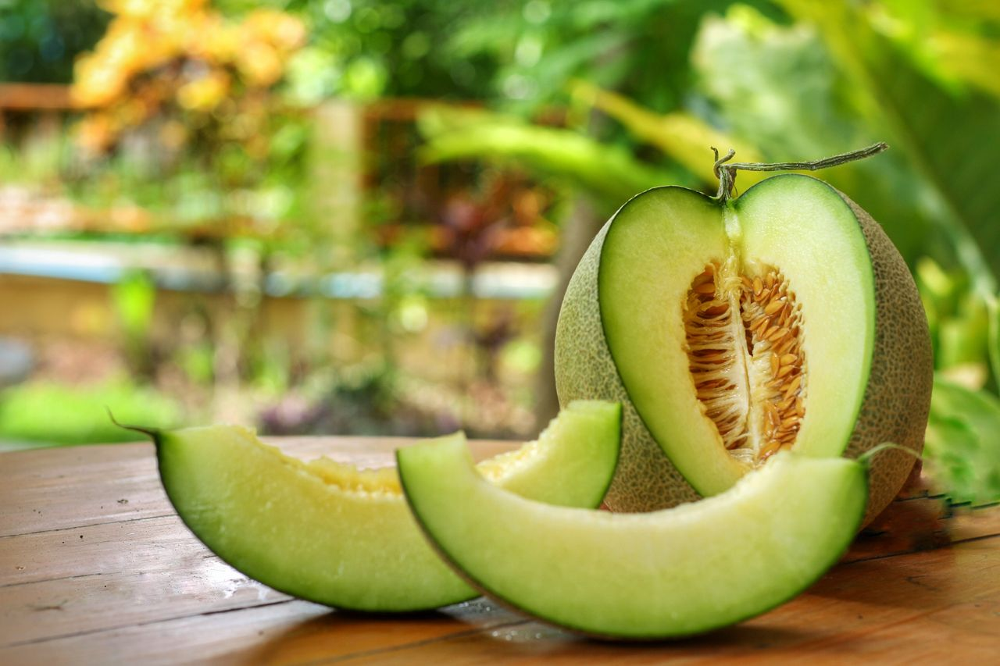

| Parámetro | Descripción |
|---|---|
| Nombre | Melón Honeydew |
| Descripción | Fruta fresca de pulpa dulce y jugosa, con alto contenido de agua y sabor suave. |
| Composición | Agua, azúcares naturales (fructosa, glucosa), fibra, vitamina C, potasio. |
| Propiedades fisicoquímicas | Peso promedio: 1.5-2.5 kg, pH: 5.3-6.5, firmeza media, color externo verde pálido. |
| Tratamiento | Lavado, desinfección y clasificación por tamaño y calidad. |
| Empaque | Cajas de cartón ventiladas, con capacidad para 4-6 unidades por caja. |
| Almacenamiento | En cámaras refrigeradas entre 7-10 °C con buena ventilación. |
| Transporte | Transporte en frío, con temperatura controlada para mantener la frescura. |
| Vida útil | 14 a 21 días en condiciones óptimas de refrigeración. |
| Tipo de consumidor | Consumidores de productos frescos, saludables y naturales. |
| Forma de consumo | Fresco, en trozos, en batidos, ensaladas o como postre. |